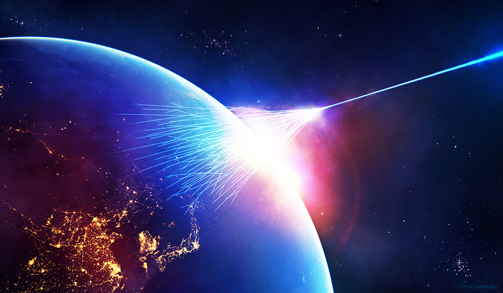

A mission to study cosmic rays
This mission will focus on the goal of exploring the ionic high-energy Universe by detecting cosmic rays.
This satellite will feature a particle detector, capable of detecting protons and alpha particles. This experiment detects cosmic ray protons and alpha-particles. Using a layered structure of detectors, it captures time-of-flight, charge, and energy of cosmic rays for full characterization.
Time-of-Flight detectors use scintillators to capture particle velocities by emitting a flash of light when struck by a charged particle, with timing precision provided by paired detectors that measure travel time between them.
Charge detection is achieved using silicon detectors, which act as parallel-plate ionization chambers, generating a current to determine particle charge.
Finally, an electromagnetic calorimeter measures particle energy by absorbing and converting the particle’s full energy into a detectable signal.
This layered arrangement enables the satellite’s PCR detector to capture critical data on cosmic ray particles with high accuracy, contributing valuable insights into their composition and behavior.
| Orbit | LEO/SSO |
| Altitude | 500 km |
| Inclination | 50-60º |
* these are preliminary parameters